Instrucțiunile Secotech de urmat înainte, în timpul și după lucrări.
Ediția din 17 octombrie 2026 49 fișe practice · Română Secotech SRL · 0498 32 49 49 · info@secotech.be
Respectați fișele tehnice ale produselor livrate și detaliile validate ale șantierului. În caz de contradicție, opriți lucrul și cereți clarificări responsabilului.
În acest ghid, „responsabilul de șantier” este interlocutorul desemnat de Secotech pentru șantier. Echipa trebuie să primească numele și contactul înainte de începere. Instrucțiunile de securitate ale șantierului și antreprenorului general rămân aplicabile; acordurile comerciale suplimentare țin de Secotech.
Trimiteți fotografiile în dosarul șantierului din OPENBTP sau prin WhatsApp responsabilului de șantier. Indicați șantier, zonă, dată și subiect (lot, suport, hidroizolație, daună sau control final). Pentru urgențe sau oprirea lucrului, sunați: o fotografie sau un mesaj nu sunt suficiente.
112 · Urgență gravă: 112. Indicați adresa șantierului, nu sediul Secotech.
Înainte de lipirea directă pe ipsos sau anhidrit, aplicați amorsa compatibilă prescrisă. Înainte de hidroizolare, urmați pregătirea specifică produsului: nu presupuneți că amorsa nu este niciodată necesară. Pentru SafetyGel pe suporturi poroase, fișa prevede un strat pregătitor diluat cu 10–20 % apă înaintea celor două straturi nediluate.
Suporturile foarte prăfoase sau absorbante pot necesita un tratament specific. Consultați fișa produsului livrat și cerințele pentru suportul existent.
Înainte de montaj, verificați pardoselile și pereții cu un dreptar, o nivelă sau un laser. Verificați și cotele și unghiurile.
Adezivul aplicat în strat subțire nu corectează un suport în afara toleranțelor. Fotografiați defectele înainte de a începe.
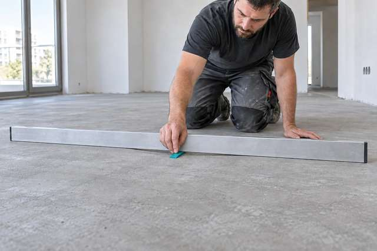
Ilustrație · Planeitate și verticalitate înainte de lucrări
SECOTECHGhid de bune practici · Română
11 · SuporturiCritic
Raportarea în scris a suporturilor neconforme
Nu începeți pe un suport neconform. Trimiteți responsabilului de șantier fotografii, amplasarea exactă și descrierea defectului, apoi așteptați instrucțiunile.
Documentarea scrisă consemnează starea inițială și permite stabilirea corecțiilor înainte de montaj.
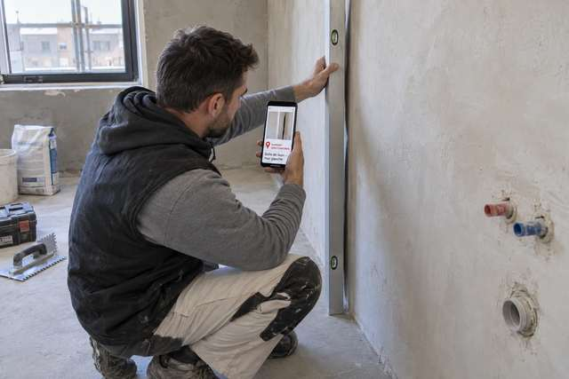
Ilustrație · Raportarea în scris a suporturilor neconforme
30 · SuporturiCritic
Umiditate: măsurați înainte de montaj
Identificați suportul și consemnați metoda, locul și rezultatul. Pentru șape anhidrite cu X-GEL S1, Litokol cere sub 0,5% CM, sau sub 0,3% CM dacă sunt încălzite. Folosiți metoda cu carbură (CM) în punctele autorizate fără a deteriora țevile. Aparatele electronice localizează umezeala și nu înlocuiesc testul CM. Pentru șape de ciment sau alte sisteme, obțineți limita aplicabilă înainte de montaj.
Nu există un prag universal pentru toate șapele de ciment. Respectați producătorul și sistemul; opriți dacă limita este necunoscută sau depășită.
Pardoseli încălzite: protocol înainte și după montaj
Obțineți procesul-verbal de prima încălzire și răcire conform producătorilor încălzirii și șapei. Verificați fisurile, umiditatea și rosturile. Solicitați oprirea încălzirii și răcirea suportului la temperatura de montaj prescrisă. Respectați rosturile perimetrale, de mișcare și de fracționare. După întărirea sistemului complet, reporniți treptat conform protocolului aprobat.
Montatorul nu modifică reglajele încălzirii. Fără protocol sau condiții validate, nu începeți și contactați responsabilul de șantier.
Înainte de montaj, validați axele, punctele de pornire, tăieturile vizibile și racordurile dintre pardoseală și pereți. Nu modificați planul fără acord.
Verificarea prealabilă evită fâșiile înguste vizibile și rosturile nealiniate.
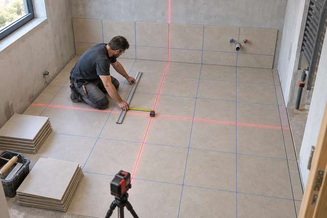
Ilustrație · Planul de montaj și alinierea rosturilor
SECOTECHGhid de bune practici · Română
32 · PregătireRegulă Secotech
Verificarea plăcilor și depozitarea produselor
Înainte de montaj, verificați referința, nuanța, calibrul, cantitatea și absența defectelor vizibile. FOTOGRAFIAȚI ÎNTOTDEAUNA etichetele sau cutiile fiecărui lot înainte de a începe: referința, codul nuanței, calibrul și numărul lotului trebuie să fie lizibile în fotografii. Trimiteți fotografiile responsabilului de șantier și păstrați-le în dosarul șantierului. Comparați mai multe cutii și distribuiți nuanțele conform aspectului validat. Păstrați și etichetele loturilor. Depozitați sacii la uscat și lichidele la temperatura prescrisă; verificați termenul de valabilitate.
Fotografia este obligatorie pentru fiecare lot, pe fiecare șantier, chiar dacă toate cutiile par identice. Permite identificarea exactă a nuanței pentru completări sau reparații. Nu montați un lot suspect; raportați diferențele înainte de utilizare.
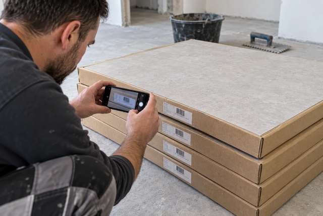
Ilustrație · Verificarea plăcilor și depozitarea produselor
45 · PregătireToleranță zero
Nu începeți niciodată placarea unei încăperi fără suficiente plăci pentru a o termina
Este strict interzis să începeți placarea unei încăperi sau a unui spațiu fără să verificați și să confirmați că plăcile efectiv disponibile și rezervate sunt suficiente pentru a termina întreaga încăpere, cu aceeași referință, aceeași nuanță și calibrul validat. Numărați plăcile utilizabile și includeți necesarul pentru tăieri, spargeri și rezerva cerută. O livrare anunțată sau speranța unei noi comenzi nu este suficientă. DACĂ EXISTĂ ÎNDOIELI SAU CANTITATEA ESTE INSUFICIENTĂ: NU ÎNCEPEȚI. Anunțați responsabilul de șantier și așteptați primirea și verificarea întregii cantități înainte de a monta orice placă.
Dacă plăcile se termină și fabrica nu mai produce aceeași nuanță, un alt lot poate avea o diferență vizibilă de culoare. Poate fi necesară îndepărtarea tuturor plăcilor deja montate în încăpere și reluarea lucrării. Nu vă asumați niciodată acest risc, nici pentru a începe doar o parte a spațiului.
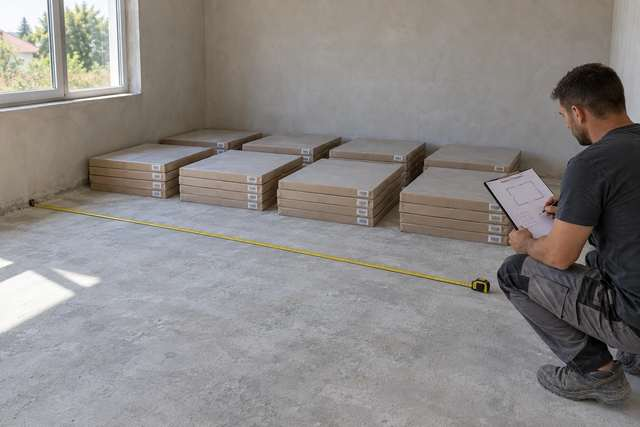
Ilustrație · Nu începeți niciodată placarea unei încăperi fără suficiente plăci pentru a o termina
SECOTECHGhid de bune practici · Română
01 · AcusticăCritic
Benzi acustice perimetrale
În apartamente, nu tăiați niciodată benzile acustice perimetrale înainte de montarea plăcilor și chituirea rosturilor.
Banda separă șapa de pereți și împiedică formarea punților acustice.
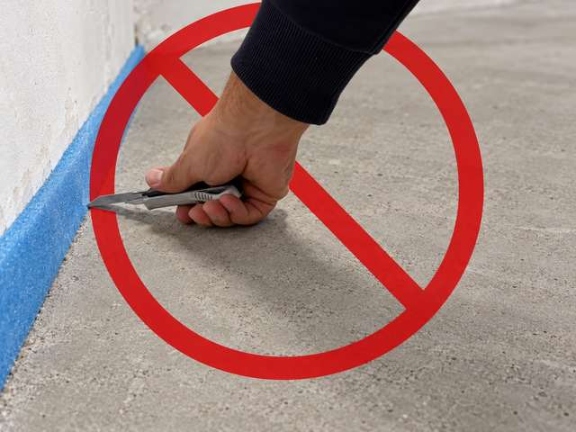
Ilustrație · Benzi acustice perimetrale
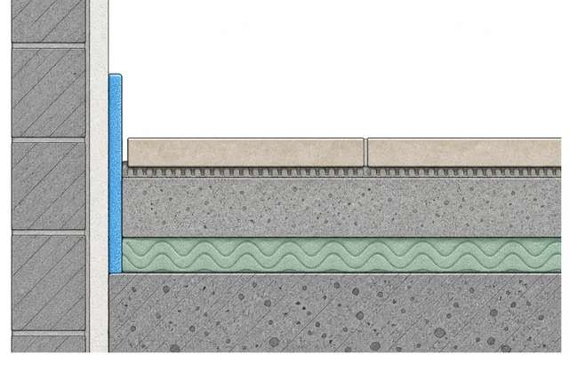
Schemă tehnică · Benzi acustice perimetrale
02 · AcusticăCritic
Plinte și rost inferior flexibil
Așezați plintele pe cale mici, fără contact cu pardoseala. Umpleți rostul superior de lângă perete cu adezivul de fixare a plintelor, conform instrucțiunii Secotech, și îndepărtați excesul. Scoateți calele și umpleți rostul inferior cu etanșantul flexibil prevăzut. Nu puneți niciodată adeziv în rostul inferior.
Rostul inferior rămâne flexibil pentru a nu transmite zgomotul de impact.
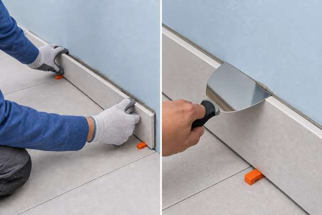
Ilustrație · Plinte și rost inferior flexibil
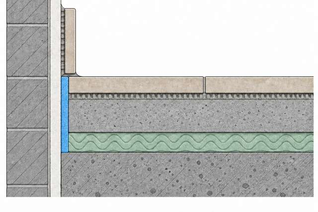
Schemă tehnică · Plinte și rost inferior flexibil
SECOTECHGhid de bune practici · Română
13 · MontajRegulă Secotech
Dublă încleiere când o latură atinge 60 cm
La Secotech, aplicați adeziv pe ambele fețe când cel puțin o latură are 60 cm sau mai mult, inclusiv 60 × 60, 30 × 60 și 30 × 120 cm. Pentru dimensiuni mai mici, procedați la fel dacă sistemul sau condițiile o cer. Ridicați o placă proaspăt montată pentru a verifica transferul.
Se aplică plăcilor pătrate și dreptunghiulare. Păstrați striațiile paralele dacă ambele fețe sunt pieptănate.
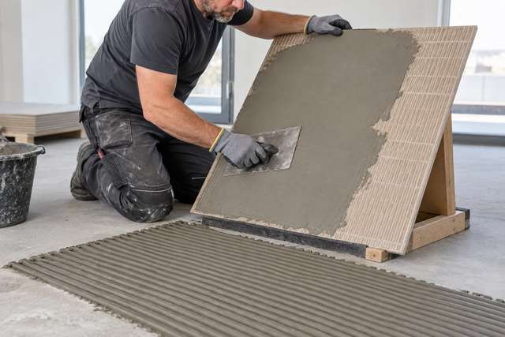
Strat de contact pe spatele plăcii · adeziv pieptănat pe suport
Folosiți clipsuri de nivelare când cel puțin o latură are 60 cm sau mai mult, inclusiv la dreptunghiuri. Pentru formate mai mici, folosiți-le numai la indicația responsabilului de șantier.
Clipsurile reduc diferențele de nivel, dar nu corectează un suport neplan.
Identificați rosturile structurale, de fracționare, de dilatație și perimetrale. Reproduceți rosturile de mișcare ale șapei în placare, exact în aceeași poziție, fără decalaj. Nu le umpleți niciodată cu adeziv sau mortar de rosturi. Orice soluție specială necesită un detaliu tehnic validat înainte de montaj.
Păstrați aceste rosturi libere și folosiți profilul sau etanșantul elastic prevăzut. O membrană de decuplare nu permite eliminarea automată a rosturilor.
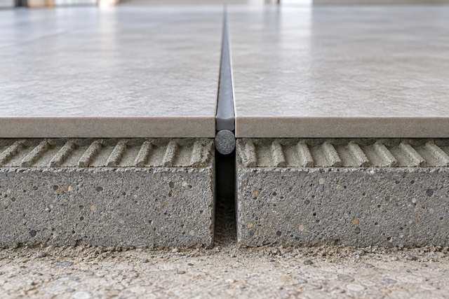
Schemă tehnică · Respectarea rosturilor de mișcare
Confirmați lățimea rosturilor înainte de a începe, ținând cont de plăci, toleranțe, locul montajului și mortarul de rosturi. Folosiți distanțiere potrivite și verificați alinierea. Nu montați niciodată plăcile lipite muchie la muchie, nici măcar pe cele rectificate.
Rostul nu se alege doar după aspect. Nu reduceți lățimea lui pentru a compensa o eroare de trasare.
Întindeți numai suprafața care poate fi placată înainte ca adezivul să formeze peliculă. Pieptănați striații drepte și paralele, apoi deplasați ușor placa perpendicular pe ele pentru a le presa. Ridicați periodic o placă și verificați contactul, mai ales la margini și colțuri.
Îndepărtați și înlocuiți adezivul care a format peliculă. Nu îl umeziți din nou și nu montați plăci pe puncte izolate de adeziv.
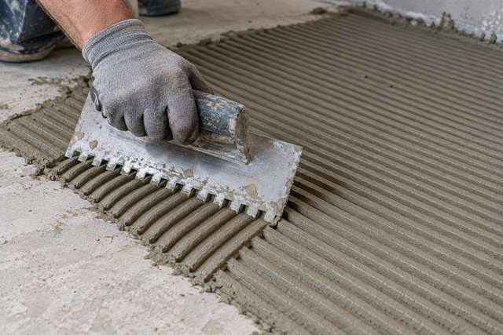
Ilustrație · Adeziv proaspăt, striații paralele și transfer
47 · MontajCritic
Frig, căldură și soare: controlați temperatura
Măsurați aerul și suportul. X-GEL S1 și X-Color 06: +5 până la +35 °C; SafetyGel: +5 până la +40 °C. Pentru Pixel 3D aplicați +5 până la +35 °C, limita mai strictă din fișă. Protejați de curenți de aer, soare direct și ploaie. Nu montați pe suport înghețat, supraîncălzit sau dacă există risc de îngheț în timpul întăririi.
Se aplică limitele întregului sistem și condițiile reale. Căldura și vântul pot forma o peliculă în câteva minute: reduceți suprafața încleiată și verificați transferul.
Aplicați două straturi nediluate, continue, încrucișate și fără zone neacoperite. Aplicați al doilea strat perpendicular pe primul. La +23 °C și 50 % umiditate relativă, așteptați minimum 2 ore între straturi. La +10 °C, așteptați 6 ore.
Frigul, umiditatea sau ventilația insuficientă măresc timpul real. Verificați uscarea înainte de a continua.
Coborâți hidroizolația peretelui până la racordul cu cădița de duș. Întoarcerea pe cădiță trebuie să se oprească în zona ocupată de rostul de silicon prevăzut la îmbinarea perete–cădiță, fără a se extinde pe suprafața vizibilă sau utilizabilă a cădiței. Realizați un racord continuu cu produsele sau accesoriile compatibile prevăzute de sistem. Nu opriți niciodată hidroizolația deasupra cădiței.
Rostul elastic dintre plăci și cădiță reprezintă doar finisajul vizibil. Nu poate compensa o hidroizolație întreruptă sau racordată incorect.
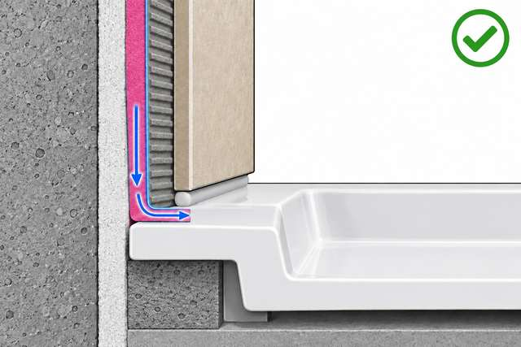
Secțiune tehnică · racord limitat la zona rostului de silicon
SECOTECHGhid de bune practici · Română
16 · HidroizolațieCritic
Străpungeri și racorduri etanșe
Tratați conductele, scurgerile, colțurile, racordurile perete-pardoseală și racordurile la cădiță cu accesoriile compatibile prevăzute de sistem.
Hidroizolația trebuie să fie continuă. O improvizație cu silicon nu înlocuiește un manșon sau o bandă prescrisă.
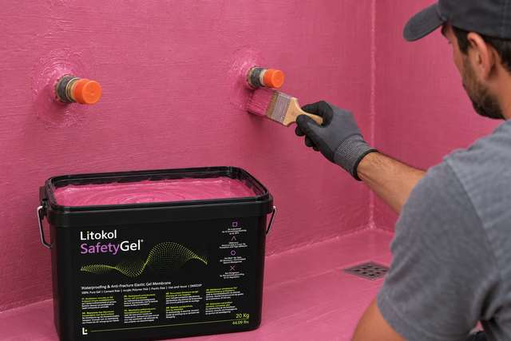
SafetyGel Litokol · aplicare cu pensula în jurul țevilor
17 · HidroizolațieCritic
Panta și evacuarea apei din dușuri
Înainte de hidroizolare și montaj, verificați panta, înălțimea grătarului, racordul cu șapa și absența contrapantei. Efectuați o probă de scurgere când este posibil.
Buildwise recomandă o pantă minimă de 1,5 % către scurgere, atât pentru șapă, cât și pentru placare.
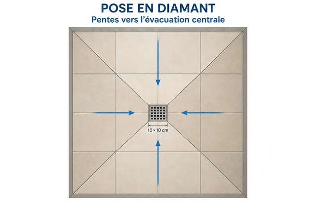
Vedere de sus · tăieturi diagonale către o scurgere centrală de 10 × 10 cm
Înainte de placare, verificați continuitatea, consumul sau grosimea necesară și uscarea. Verificați colțurile, străpungerile și scurgerea conform sistemului folosit. Fotografiați detaliile înainte de a fi ascunse. Efectuați proba de etanșeitate prevăzută numai după timpul și prin metoda autorizate.
Reparați orice defect cu o soluție compatibilă înainte de acoperire. Nu combinați accesorii din sisteme diferite fără validare.
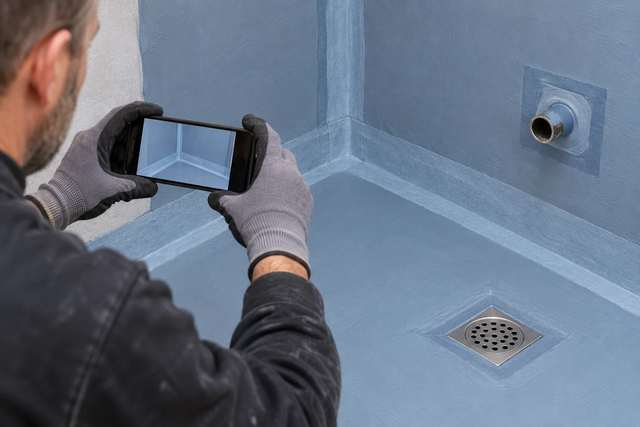
Ilustrație · Controlul hidroizolației înainte de acoperire
03 · FinisajeStandard
Rost lângă profilul metalic
Păstrați un rost regulat între placă și profilul metalic. Umpleți-l complet cu mortarul de rosturi prevăzut. Nu montați niciodată placa în contact direct cu metalul.
Rostul împiedică contactul direct, protejează muchia plăcii și asigură un finisaj uniform.
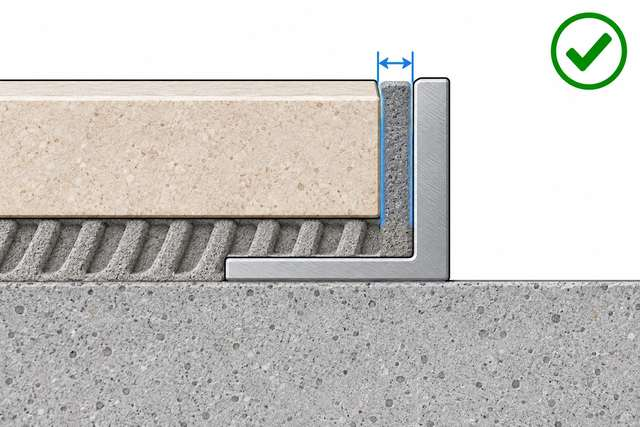
Corect · rost umplut între placă și profil
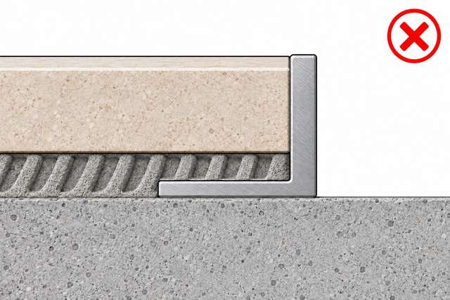
Interzis · placă direct lângă profil
SECOTECHGhid de bune practici · Română
04 · FinisajeStandard
Tăieturi la 45° la colțurile exterioare ale plintelor
La colțurile exterioare, realizați două tăieturi curate la 45° și îmbinați plintele în unghi, exceptând cazurile în care planul prevede un profil sau o piesă specială de finisare.
Colțul trebuie să fie închis, aliniat și fără muchii brute vizibile.
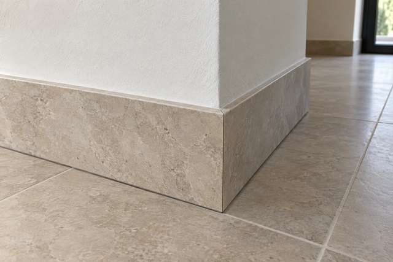
Finisaj real · colț exterior îmbinat la 45°
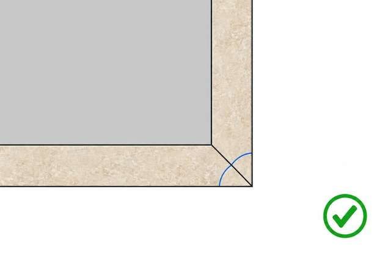
Vedere de sus · două tăieturi la 45°
21 · FinisajeRegulă Secotech
Toate găurile se execută cu carotă circulară
Toate găurile din plăcile ceramice trebuie executate cu o carotă diamantată circulară, potrivită materialului și diametrului necesar. Deschiderile pătrate tăiate cu polizorul unghiular sunt interzise, chiar dacă ulterior sunt ascunse de o rozetă sau de un aparat. Găurile trebuie să fie regulate, centrate și fără ciobituri vizibile.
O gaură circulară curată limitează punctele de inițiere a fisurilor și deschiderile supradimensionate. Nu mascați niciodată un decupaj pătrat sau defect cu silicon.
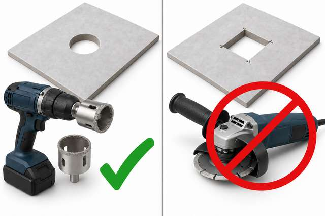
Permis: gaură rotundă executată cu carotă diamantată. Interzis: gaură pătrată tăiată cu polizorul unghiular.
SECOTECHGhid de bune practici · Română
36 · FinisajeCritic
Rosturi elastice curate și continue
Pregătiți fețe de aderență curate și uscate. Folosiți un etanșant compatibil cu materialele și utilizarea, cu amorsă și șnur de fund de rost când sunt prescrise. Respectați geometria și adâncimea prevăzute, neteziți fără adâncituri și protejați până la întărire.
Etanșantul trebuie să se poată deforma. Un rost elastic de finisaj nu înlocuiește niciodată hidroizolația de sub plăci.
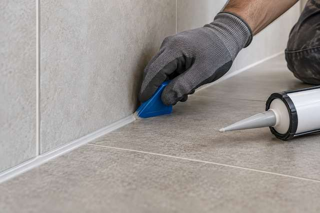
Ilustrație · Rosturi elastice curate și continue
51 · FinisajeRegulă Secotech
Control final și fotografii înainte de plecare
Înainte de plecare, controlați rosturi, margini, plinte, tăieturi, racorduri și curățenie, fără defecte vizibile. Fotografiați vederi generale și detalii, identificați restanțele și protecțiile lăsate. Trimiteți în OPENBTP sau WhatsApp responsabilului de șantier, cu șantier, zonă și dată. Comunicați termenele de utilizare și solicitați controlul final.
Plecarea echipei nu reprezintă recepția lucrărilor. Urmăriți și rezolvați restanțele conform instrucțiunilor responsabilului de șantier.
SECOTECHGhid de bune practici · Română
07 · ProduseCritic
Prepararea X-GEL S1
Pentru un sac gri de 20 kg, folosiți 6,0–6,6 litri de apă. Pentru un sac alb de 20 kg, folosiți 6,2–6,8 litri. Turnați apa măsurată, adăugați treptat pulberea și amestecați până la omogenizare. Așteptați 5 minute, apoi amestecați din nou, scurt.
Sunt necesare două etape de amestecare. Nu adăugați niciodată apă după ce pasta a început să facă priză.
Întindeți X-GEL S1 pe suport cu o gletieră dințată potrivită dimensiunii plăcii și suportului. Păstrați striațiile drepte și paralele. Montați placa în adezivul încă proaspăt, apoi ridicați periodic o placă pentru a verifica transferul și adaptați metoda dacă este necesar.
Pasta rămâne utilizabilă 6–8 ore, iar timpul deschis depășește 40 de minute numai în condițiile de referință.
Așezați ploturile pe un suport stabil, rigid și suficient de portant. Curățați suprafața, verificați evacuarea apei sub terasă și protejați membrana hidroizolantă. Prevedeți protecții compatibile cu suportul.
Spațiul de sub dale nu înlocuiește drenajul suportului. Fișa PB limitează utilizarea la pietoni, fără vehicule sau echipamente vibrante.
Reglarea ploturilor și păstrarea rosturilor deschise
Alegeți fiecare plot în intervalul său de reglaj. Dacă nivelul finit trebuie să compenseze panta suportului, folosiți corectorul compatibil prevăzut. Montați distanțierele corespunzătoare rostului ales și tampoanele potrivite. Verificați nivelul și sprijinul fiecărei dale.
Rosturile rămân deschise pentru trecerea apei. Fiecare plot trebuie să se sprijine ferm și nicio dală nu trebuie să se balanseze la trecere.
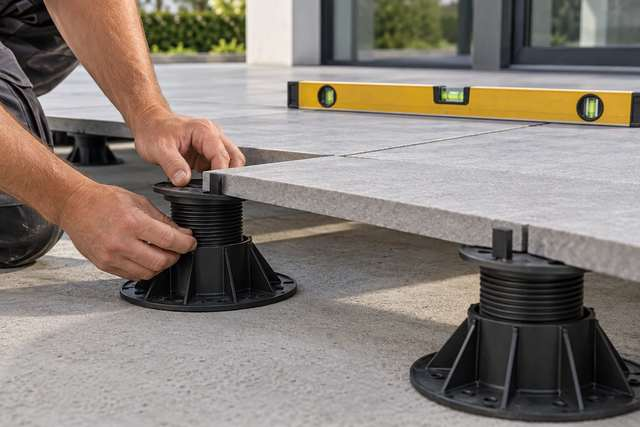
Ilustrație · Reglarea ploturilor și păstrarea rosturilor deschise
Prevedeți accesoriile de margine ale sistemului. Lângă perete, U-WALL-PP menține un spațiu de 5 mm. Pentru tăieturi perimetrale de 2–14 cm, Buzon propune suportul U-EDGE cu interfața de fixare potrivită plotului.
Piesele tăiate trebuie sprijinite și fixate. Folosiți distanțiere și tampoane compatibile; nu lăsați o piesă mică în echilibru instabil.
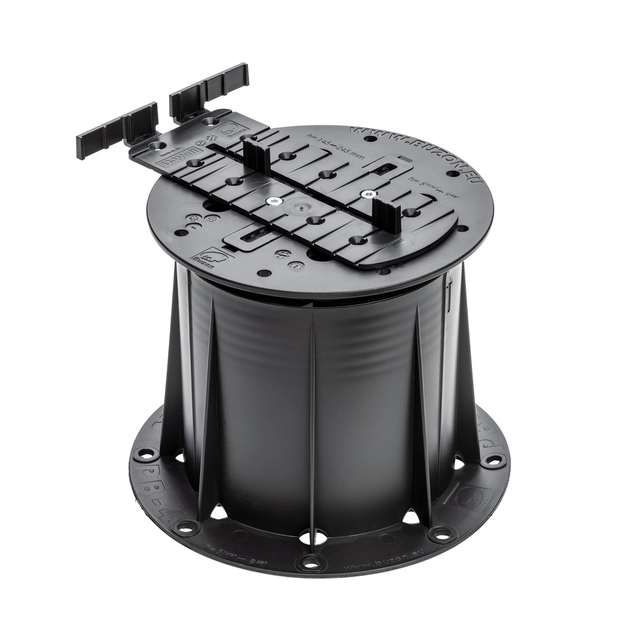
U-WALL-PP montat pe un plot · fotografie oficială Buzon
Numărul și poziția reazemelor în funcție de format
Respectați amplasarea reazemelor la colțuri, pe laturi și în centru, în funcție de format. Schemele de mai jos reproduc pozițiile recomandate de Buzon pentru formatele prezentate.
Numărați ploturile pe planul complet al terasei, ținând cont de reazemele comune, margini și tăieturi.
Fiecare cerc reprezintă un reazem sub dală. Reazemele de margine și colț pot fi comune: nu înmulțiți pur și simplu aceste numere cu numărul dalelor.
40 × 40 cm 4 reazeme
4 colțuri
50 × 50 cm 4 reazeme
4 colțuri
60 × 60 cm 4 reazeme
4 colțuri
75 × 75 cm 5 reazeme
4 colțuri + centru
80 × 80 cm 5 reazeme
4 colțuri + centru
90 × 90 cm 9 reazeme
4 colțuri + 4 mijloace de latură + centru
100 × 100 cm 9 reazeme
4 colțuri + 4 mijloace de latură + centru
120 × 30 cm 6 reazeme
4 colțuri + mijlocul celor 2 laturi lungi
120 × 40 cm 6 reazeme
4 colțuri + mijlocul celor 2 laturi lungi
120 × 60 cm 6 reazeme
4 colțuri + mijlocul celor 2 laturi lungi
90 × 45 cm 6 reazeme
4 colțuri + mijlocul celor 2 laturi lungi
Poziții din catalogul Buzon PB 2025, p. 105, pentru montaj direct pe ploturi. Producătorul dalelor și condițiile șantierului pot impune reazeme suplimentare. Confirmați formatele neprezentate și montajele decalate.
Pentru E-BRS-41 sau U-BRS-38: maximum 80 cm între axele ploturilor de sub aceeași șină. Pentru E-BRS-27 sau U-BRS-24: maximum 60 cm. Între axele a două șine: maximum 60 cm, redus în funcție de formatul și rezistența plăcilor și de cerințele fabricantului. Nu confundați cele două distanțe.
Măsurați distanțele între axe. Profilul grinzii și formatul dalelor determină reazemele necesare.
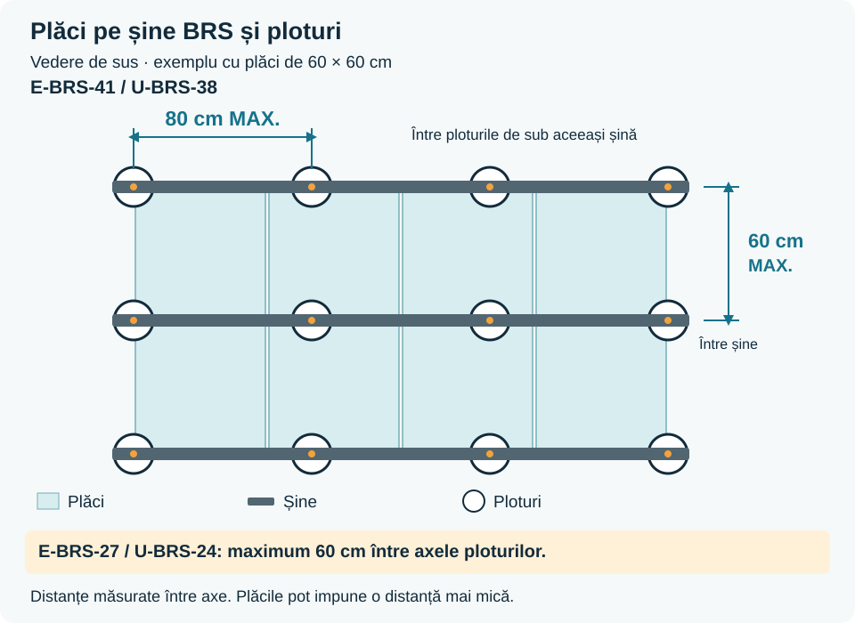
Schemă BRS · maximum 80 cm între ploturi pentru șinele înalte, 60 cm între șine
Protejarea placării terminate nu este o lucrare sistematică: realizați-o NUMAI LA CEREREA EXPRESĂ A GESTIONARILOR ȘANTIERULUI. După această cerere și după întărirea suficientă, montați protecția prevăzută împotriva șocurilor, zgârieturilor, prafului abraziv și circulației celorlalte firme.
Confirmați zona și tipul de protecție cerute. Folosiți o protecție curată, adecvată și care nu pătează; verificați compatibilitatea adezivilor. Derulați protecția pe plăcile încă neacoperite, fără a acoperi din nou o zonă deja protejată.
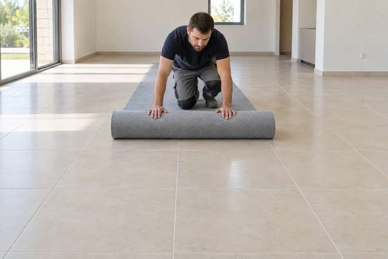
Protecție la cererea expresă a gestionarilor · derulare pe plăcile neacoperite
24 · ProtecțieCritic
Protejarea cădiței de duș înainte de lucrări
Înainte de hidroizolare sau placare, curățați atent cădița de duș. Așezați carton de protecție curat, tăiat la dimensiune, apoi fixați-l cu bandă compatibilă care nu lasă urme. Începeți lucrările numai după montarea protecției.
Cartonul fixat protejează cădița de zgârieturi, lovituri, scule, adeziv și resturi de hidroizolație pe toată durata intervenției.
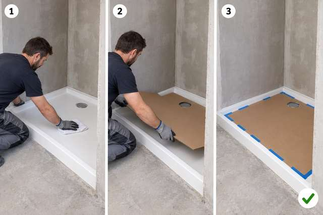
Curățați · ajustați cartonul · fixați protecția
SECOTECHGhid de bune practici · Română
37 · ProtecțieCritic
Termene înainte de circulație și utilizarea apei
Blocați zona până la expirarea termenelor sistemului. X-GEL S1 la +23 °C și 50% UR: chituire pe perete după 6–8 h, pe pardoseală după 12 h, circulație după 12 h și utilizare după 5 zile. X-Color 06: circulație după 24 h, utilizare după 7 zile. Pixel 3D la +23 °C: circulație după 24 h și utilizare după 5 zile.
Dușul se folosește numai după întărirea completă a tuturor componentelor. Rețineți termenul cel mai lung, adaptat condițiilor reale. Vezi tabelul; pelicula uscată nu înseamnă întărire în profunzime.
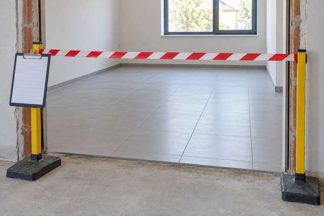
Ilustrație · Termene înainte de circulație și utilizarea apei
38 · ProtecțieCritic
Curățare finală adaptată placării
Folosiți produsul și metoda compatibile cu plăcile, rosturile, pietrele și profilele. Faceți o probă într-o zonă discretă, respectați diluția și clătirea, apoi îndepărtați reziduurile. Protejați elementele sensibile în timpul operației.
Nu folosiți acid pe piatră calcaroasă sau produse agresive fără verificare. Nu turnați apă cu adeziv sau ciment în scurgeri.
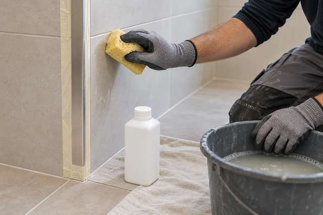
Ilustrație · Curățare finală adaptată placării
SECOTECHGhid de bune practici · Română
39 · SiguranțăCritic
Tăieri: reducerea prafului de silice
Preferați tăierea manuală adecvată, tăierea umedă cu o sculă proiectată pentru aceasta sau captarea la sursă. Izolați postul și protejați ceilalți lucrători. Aspirați cu echipamente potrivite pentru praf periculos sau curățați umed; nu măturați uscat și nu suflați cu aer comprimat.
Tăierea în exterior nu elimină singură riscul. Completați protecțiile colective cu protecția respiratorie prescrisă pentru sarcină.
Purtați protecții potrivite: încălțăminte de siguranță, ochelari, protecție auditivă, mănuși compatibile cu sarcina și genunchiere. Verificați sculele, discurile, apărătorile și cablurile; deconectați alimentarea înainte de schimbarea accesoriilor. Pentru dale mari, folosiți mijloace de manipulare adecvate și lucrați în echipă când este necesar.
Scoateți din uz sculele defecte. Protejați cablurile de apă și nu îndepărtați niciodată apărătoarea pentru a ușura tăierea.
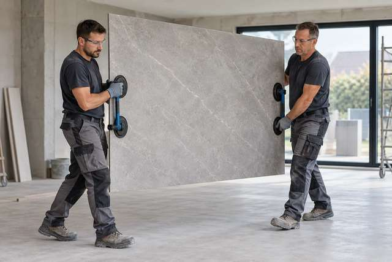
Ilustrație · Echipamente, scule și manipulare
SECOTECHGhid de bune practici · Română
48 · SiguranțăToleranță zero
Instructaj de securitate, PSS și protecție
Urmați instructajul și citiți planul de securitate și sănătate (PSS): acces, evacuare, prim ajutor și riscuri. La înălțime, folosiți echipamente autorizate, stabile și verificate; fără sprijiniri improvizate sau scări neadecvate. Adezivii și chiturile cu ciment sunt alcaline: purtați mănuși și ochelari adecvați și respectați FDS. La stropire, clătiți imediat cu apă din abundență, alertați persoana de prim ajutor și urmați FDS. Alcoolul și drogurile sunt interzise în timpul lucrului; nu lucrați cu capacități afectate.
Dacă lipsesc instructajul, protecția sau condițiile sigure, opriți și informați responsabilul de șantier. Protecția colectivă are prioritate.
Opriți activitatea și securizați fără a vă pune în pericol. În urgențe grave, sunați 112 fără a aștepta Secotech: indicați adresa exactă, accesul, tipul accidentului și numărul victimelor. Urmați operatorul și alertați persoana de prim ajutor. Asigurați ghidarea echipelor și eliberați accesul. Apoi informați responsabilul de șantier și Secotech la +32 498 32 49 49.
Raportați și incidentele fără victime în OPENBTP sau WhatsApp. Nu întârziați ajutorul pentru fotografii. Reluați numai după eliminarea pericolului și acordul responsabilului de șantier.
Nu urinați niciodată în sticle sau recipiente. Nu utilizați niciodată obiectele sanitare ale clădirii în construcție. Folosiți exclusiv toaletele de șantier destinate acestui scop.
Anunțați imediat responsabilul de șantier despre orice problemă de acces sau întreținere.
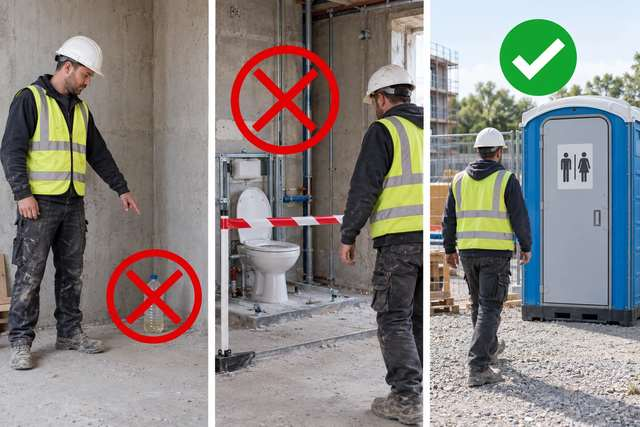
Sticle și sanitare ale clădirii interzise · folosiți toaletele de șantier
19 · Organizarea șantieruluiCritic
Ordine zilnică în zonele de lucru
La sfârșitul fiecărei zile, ordonați și curățați toate zonele de lucru. Evacuați deșeurile, gălețile și ambalajele goale; îndepărtați adezivul, noroiul, praful și apa, apoi depozitați sculele și materialele în zona prevăzută.
Căile de trecere, accesul și ieșirile trebuie să rămână curate, libere și sigure pentru celelalte echipe și pentru reluarea lucrului a doua zi.
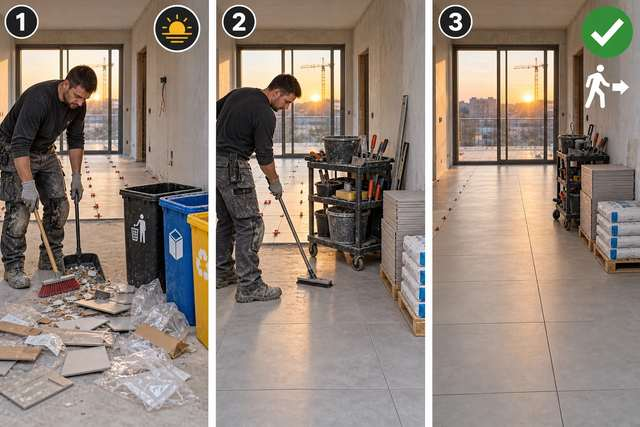
Evacuați · curățați și ordonați · mențineți trecerile libere
SECOTECHGhid de bune practici · Română
20 · Organizarea șantieruluiToleranță zero
Raportarea imediată a daunelor și greșelilor
Raportați imediat orice daună, greșeală, spargere, scurgere sau deteriorare a altei lucrări, cu fotografii și amplasarea exactă. Nu ascundeți problema și nu continuați fără instrucțiuni.
Raportarea rapidă limitează reparațiile și costurile.
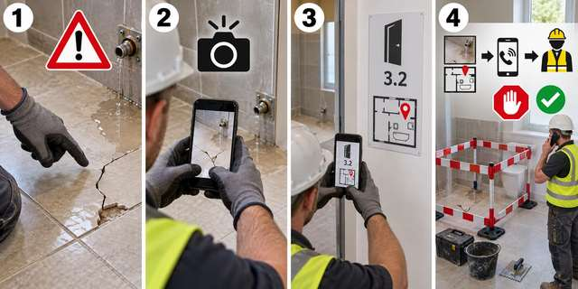
Constatați · fotografiați · localizați · opriți și raportați
22 · Organizarea șantieruluiCritic
Sortarea și evacuarea separată a deșeurilor
Separați deșeurile inerte, cartonul și deșeurile mixte în recipientele sau zonele prevăzute. Așezați resturile de plăci orizontal, în stive stabile, pe un palet dedicat. Evacuați regulat fiecare categorie fără a le amesteca și feriți deșeurile depozitate de ploaie.
Sortarea facilitează eliminarea corespunzătoare, evită contaminarea între categorii și împiedică ambalajele ude să murdărească șantierul.
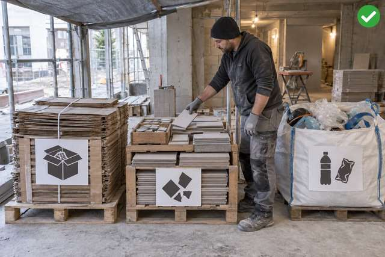
Carton · resturi de plăci așezate orizontal · deșeuri mixte și plastic
SECOTECHGhid de bune practici · Română
23 · Organizarea șantieruluiCritic
Tăiere în exterior după începerea finisajelor
Din momentul începerii vopsitoriei sau montării tâmplăriei, nu mai tăiați cu polizorul unghiular în interior. Instalați postul de tăiere în exterior, în zona autorizată, apoi curățați praful și resturile produse.
Praful abraziv de tăiere deteriorează vopseaua, tâmplăria, geamurile și lucrările finalizate.
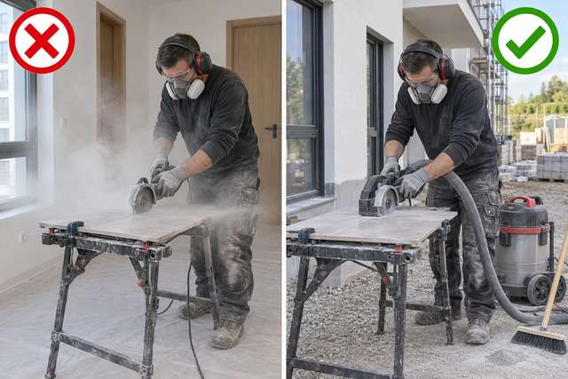
Interzis în interior după începerea finisajelor · post de tăiere exterior
41 · Organizarea șantieruluiRegulă Secotech
Program, vecinătate și interdicția de a fuma
Respectați programul și zonele de lucru autorizate. Anunțați responsabilul de șantier înainte de lucrări zgomotoase sau cu praf și coordonați accesul celorlalte echipe. Regulă Secotech: fumatul și țigările electronice sunt interzise în clădiri; folosiți doar zona exterioară autorizată.
Respectați ocupanții și bunurile lor. Mențineți accesul și ieșirile libere și raportați imediat situațiile periculoase.
Ilustrație · Program, vecinătate și interdicția de a fuma
SECOTECHGhid de bune practici · Română
44 · Organizarea șantieruluiToleranță zero
Nu goliți niciodată gălețile de curățare în scurgeri
Este interzis să vărsați apa din gălețile folosite la curățarea adezivului sau a chitului de rosturi în chiuvetă, lavoar, toaletă, duș, sifon de pardoseală sau rigola stradală pentru apele pluviale. Colectați apa murdară într-un recipient etanș și lăsați-o să se decanteze. Depuneți numai reziduurile întărite în containerul desemnat pentru deșeuri minerale, conform instrucțiunilor responsabilului de șantier. Păstrați apa rămasă în recipient până la tratarea sau ridicarea autorizată.
Reziduurile se pot întări și pot bloca țevile. Chiar și după decantare, nu vărsați apa rămasă într-o scurgere fără instrucțiunea explicită a responsabilului de șantier.
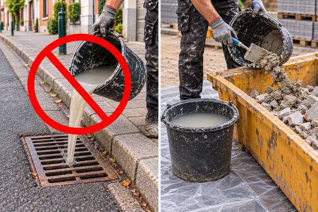
Interzis: apă murdară în rigola stradală · reziduuri întărite în containerul pentru deșeuri minerale, lichidul separat
50 · Organizarea șantieruluiRegulă Secotech
Lucrări suplimentare și măsurători
Nicio lucrare suplimentară fără acordul scris prealabil Secotech, cu zona, prestația și condițiile. La situații neprevăzute, securizați și cereți instrucțiuni scrise. Măsurați pe zone și poziții potrivit normelor de măsurare aplicabile și documentelor contractului; precizați regulile pentru goluri, deduceri și accesorii. Trimiteți releveele la verificare înainte de facturare.
Tratați cantitățile, golurile, accesoriile și pierderile conform regulilor de măsurare din contract. Clarificați în scris orice ambiguitate înainte de execuție.
Date de referință Litokol: +23 °C, 50% UR, dacă nu se precizează altfel. Adaptați la condițiile reale și fișa produsului livrat. Timpii se adună între etape succesive; fiecare componentă trebuie să fie pregătită înainte de utilizare.
Produs
Apă / pregătire
Timp de lucru
Înainte de etapa următoare
Circulație
Utilizare
Aplicare
X-GEL S1
Gri: 6,0–6,6 L / 20 kg. Alb: 6,2–6,8 L / 20 kg. Repaus 5 min.
Pastă: 6–8 h. Timp deschis > 40 min.
Chituire: perete 6–8 h; pardoseală 12 h.
12 h
5 zile; piscine 14 zile.
+5 până la +35 °C
SafetyGel
Gata de utilizare; straturi pure după pregătirea suportului.
Așteptați uscarea completă între straturi.
Între straturi ȘI înainte de placare: 2 h; la +10 °C: 6 h.
Membrană de acoperit; fără circulație directă.
Utilizarea depinde de sistemul complet.
+5 până la +40 °C
X-Color 06
5,6–6,0 L / 20 kg (28–30%).
Pastă: circa 40 min.
Curățare cu buretele: circa 20–25 min; verificați priza.
24 h
7 zile; piscine 14 zile.
+5 până la +35 °C
Pixel 3D
Gata de utilizare; nu adăugați apă.
Peliculă: circa 15 min.
Întărire în profunzime: circa 2–3 mm / 24 h.
24 h la +23 °C
5 zile la +23 °C.
Folosiți +5 până la +35 °C; ideal +15 până la +25 °C.
Pentru duș, așteptați întărirea completă a hidroizolației, adezivului, chitului și etanșantului. Pelicula uscată nu permite utilizarea apei. Confirmați termenul întregului sistem.
Confirm că am primit și înțeles această ediție și instrucțiunile șantierului. Știu cui să semnalez problemele și voi cere explicații dacă nu înțeleg. Semnătura nu înlocuiește instructajul, formarea sau recepția lucrărilor.